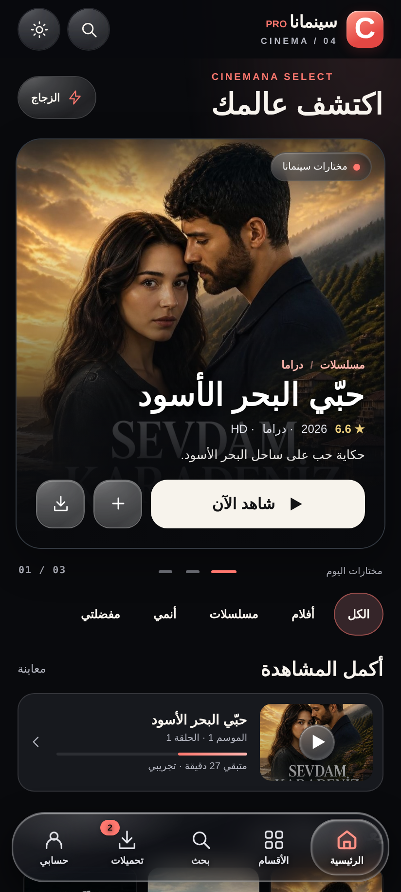
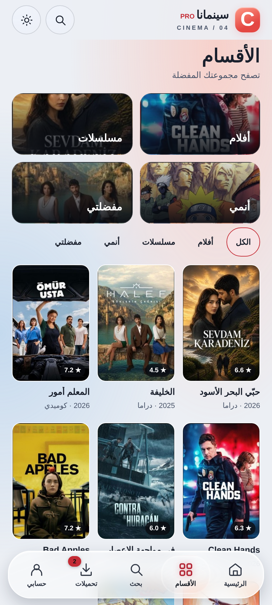
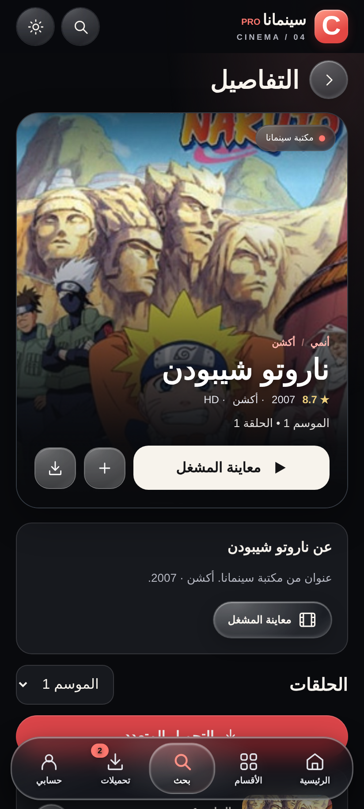
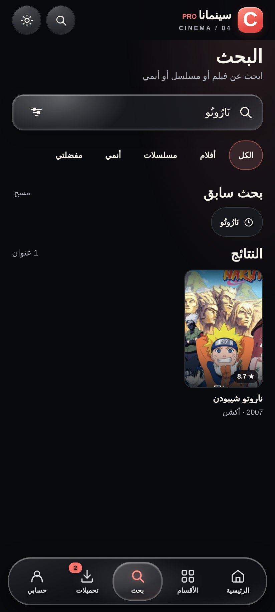
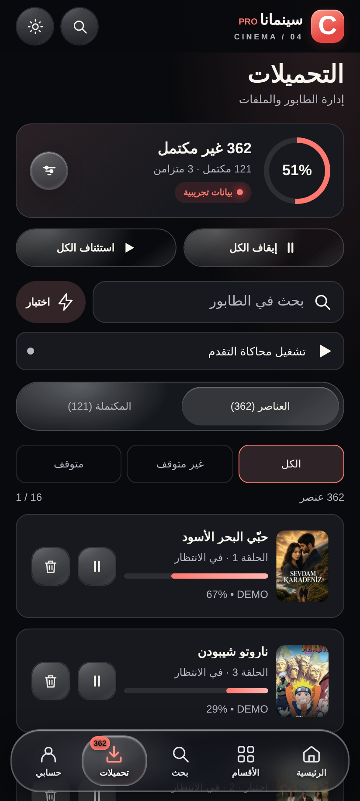
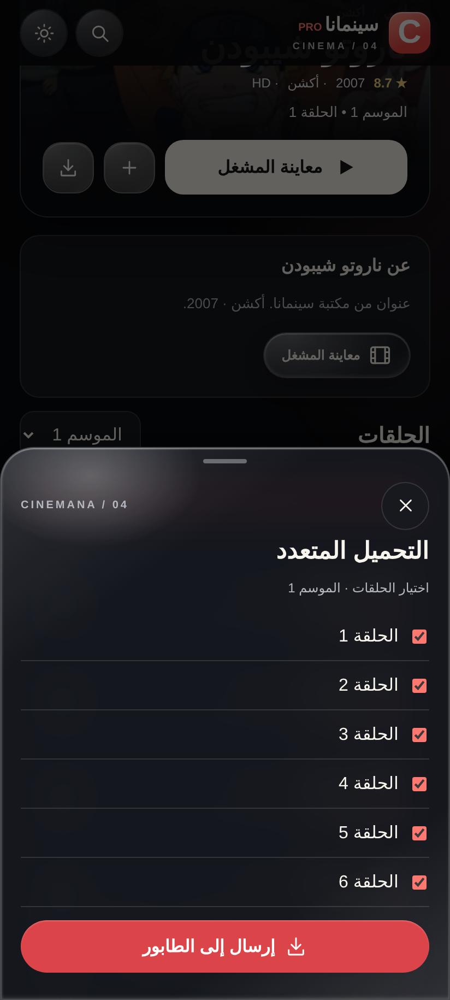
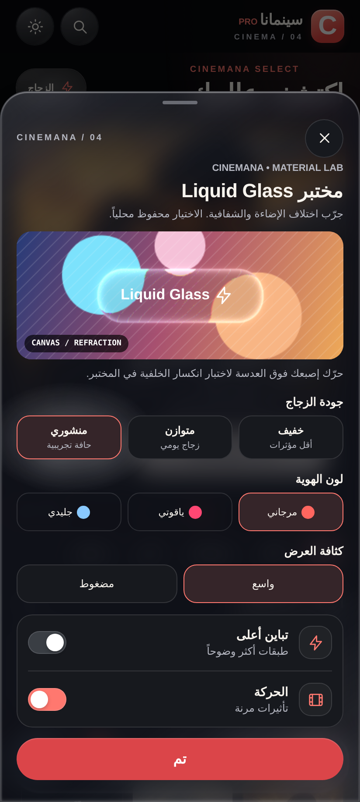
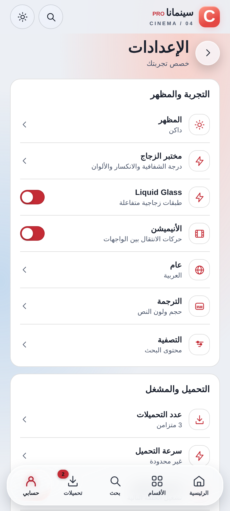

المحتوى في المقدمة، والتنقل يطفو مع انكسار تجريبي للخلفية.
01 / OBSIDIAN 04

تفاصيل الأفلام والمسلسلات، البحث والتصفية، والمشاهدة لاحقاً.
02 / DISCOVER

طابور اختبار يضم 483 عنصراً، مع عرض 24 فقط في الصفحة. بيانات المحاكاة فقط.
03 / DOWNLOADS

مختبر زجاج، ثلاثة مستويات للجودة وألوان قابلة للتخصيص.
04 / PERSONALIZE
